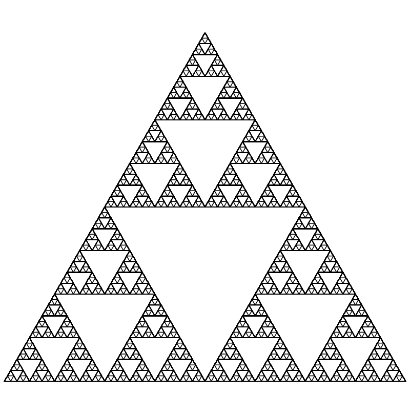
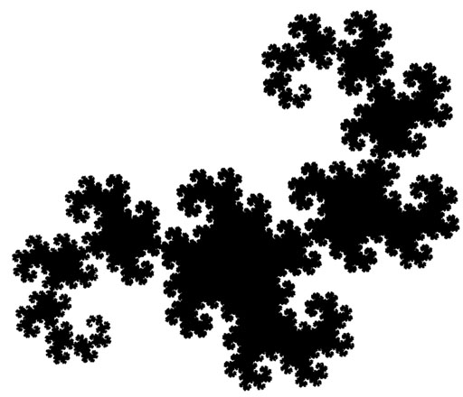

Фрактальные деревья - это один из самых удивительных и захватывающих видов фракталов, которые поражают своей красотой и необычностью.
Фрактальные деревья представляют собой графическое представление деревьев, которые создаются с помощью математических алгоритмов. Каждая ветвь и лист дерева создается исходя из определенных правил и формул, что делает их уникальными и завораживающими.
На нашем сайте вы сможете узнать об основных видах фрактальных деревьев, таких как дерево Пифагора, дерево Серпинского и дерево Хартер-Хейтвея. Каждый вид фрактального дерева имеет свою уникальную структуру и красоту, которая поражает воображение.
Дерево Пифагора – это геометрическая фигура, состоящая из прямоугольных треугольников, каждый из которых имеет стороны, равные целым числам. Дерево Пифагора получается путем последовательного расположения таких треугольников, начиная с самого большого и уменьшая их размер по мере приближения к вершине.
Дерево Серпинского(или треугольник Серпинского) - это фрактальная структура, состоящая из треугольников, каждый из которых делится на более мелкие треугольники по определенному шаблону. При каждом шаге процесса деления треугольника на более мелкие части повторяется, что создает сложный узор.
Дерево Хартер-Хейтвея - это необычная структура, которая выглядит как двоичное дерево, от которого отходят новые ветви в случайных направлениях. Это дерево используется в компьютерной графике для создания формы деревьев и растений с натуральным и красивым внешним видом.
Построение абстрактного фрактального дерева обычно начинается с отрисовки ствола дерева - это может быть одна линия или несколько линий, соединенных между собой. Затем, начинают добавляться ветви, которые отходят от ствола, деление на более мелкие ветви и их повороты могут происходить по определенным математическим алгоритмам, таким как рекурсивные функции или случайные вычисления. Постепенно дерево приобретает все более сложную структуру, повторяющуюся на разных уровнях масштаба, что создает впечатляющий и красочный узор.